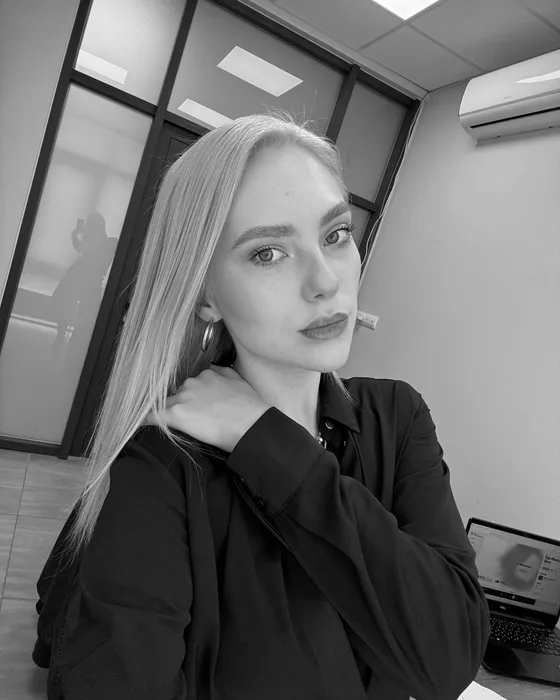

Для тех, кто хочет говорить красиво и грамотно. Учим выступать так, чтобы слушали: ораторское мастерство, актёрские техники, интервью, подкасты, сценическая уверенность.
Кому подойдёт
тем, кто боится публичных выступлений и хочет говорить свободно
блогерам и ведущим, которым важен голос и харизма
тем, кто готовится к поступлению в творческие вузы
«Я буквально на аркане притащила подростка 12 лет в летний лагерь… Через неделю сын сам просился продлить. Бежал туда каждое утро, хотя любитель поспать. Медиашкола — это лучшее, что есть в городе».
Галина Шаповалова · июль 2026
«Дети в восторге. Что они там делают непонятно, но глаза светятся. Ребёнок говорит, что это лучший лагерь в Краснодаре!»
Диденко Вова · август 2026
«Дочка после первой смены сразу распотрошила копилку и сказала: запишите меня снова! По итогу наш зажатый ребёнок раскрепостился. Счастливые глаза ребёнка — главный индикатор для родителей».
Евгения Савадянц · август 2026
«Сын ходит год в Медиашколу. Уже несколько раз снимался в телепередачах в качестве ведущего и корреспондента. Всегда бежит с радостью на занятия».
Светлана Колесниченко · март 2024
«Обратная связь всегда на высшем уровне: конструктивная, индивидуальная и мотивирующая расти дальше. Ребёнок счастлив обучаться, с нетерпением ждём нового учебного года».
Ольга Куличкина · июль 2026
«Очень классно видеть, как горят глаза у сына, как он открывает для себя новые умения и возможности. Спасибо за выпускной, на нём я и насмеялась, и прослезилась!»
Ирина Кабацюра · июль 2026
«Каждый день был расписан по минутам: мастер-классы от профессионалов своего дела, съёмки, экскурсии на телевидение. Это не просто лагерь, а настоящая школа юного журналиста».
Сабина Г. · июль 2026
«Неважно, стану ли я телеведущей, у меня нет иллюзий. Но то, что я уже узнала много нового и полезного, это факт».
Виргиния Орлова · ученица · апрель 2024
«К детям индивидуальный подход, раскрывают их таланты. Каждый день насыщен мероприятиями. И конечно же продолжим занятия в медиашколе».
Педагог Медиашколы, профессиональный оператор, видеограф

Валерия Звездина
Педагог Медиашколы
Вилен Алмадий
Педагог Медиашколы
Основатель школы — Дмитрий Крамарь, телеведущий, генеральный продюсер «Кубань 24».
Частые вопросы
Что спрашивают родители
01 С какого возраста берёте?
На курс «Медиа» — с 7 до 16 лет, на «Успешного оратора» — с 10 до 16. Группы разделены по возрасту и темпу.
02 Что выбрать: «Медиа» или «Успешный оратор»?
«Медиа» — если хочется снимать, монтировать, фотографировать и создавать проекты. «Успешный оратор» — если запрос про речь, уверенность, выступления и работу в кадре. Лучше записаться на консультацию: куратор проведёт диагностику и даст подробную обратную связь.
03 Все ли ребята участвуют в съёмках программ для ТВ?
Да, все. Каждый ребёнок за время обучения обязательно примет участие в съёмках программы для эфира, а количество съёмок зависит от его инициативы. В программе «Взрослые в ответе» дети действительно работают журналистами: изучают информацию о герое, придумывают вопросы, готовятся к съёмке — это часть образовательного процесса.
04 Сколько длится обучение?
Образовательная программа рассчитана на два года. После этого срока школа даёт сертификат о прохождении обучения.
05 Если ребёнок без опыта — подойдёт?
Да. Мы для этого и существуем: чтобы у ребёнка появился опыт, он стал увереннее, перестал стесняться камеры и получил полезные для жизни навыки.
06 Что если ребёнок не из Краснодара?
У нас учились ребята из Армавира, Туапсе, Апшеронска и Новороссийска. Если есть желание развиваться в медиа, это не проблема: программа 2026 года устроена так, что поездки в Краснодар можно планировать заранее.
07 Можно ли получить налоговый вычет?
Школа работает по образовательной лицензии и предоставляет документы об оплате. Возможность вычета зависит от права конкретного налогоплательщика и требований ФНС.